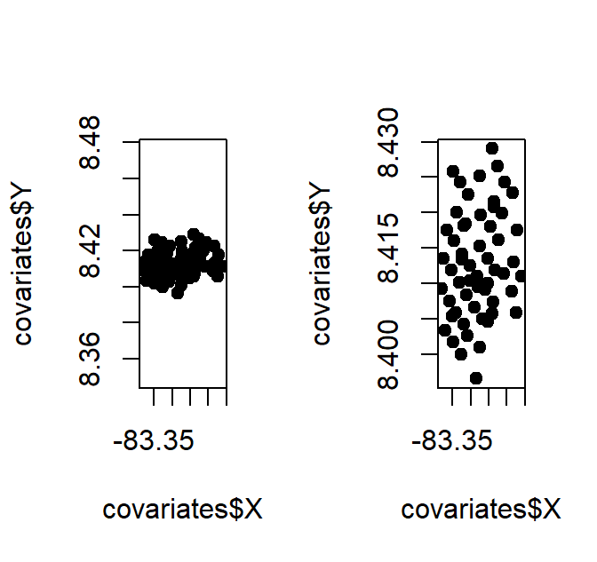
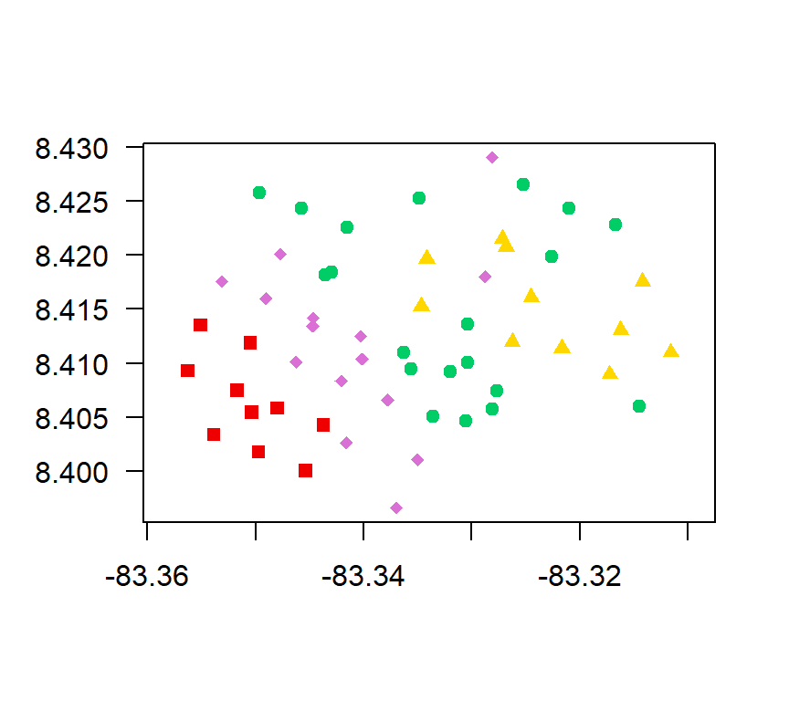
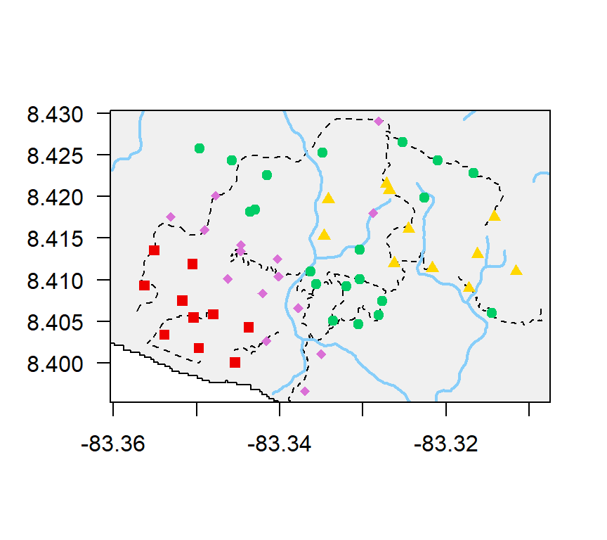
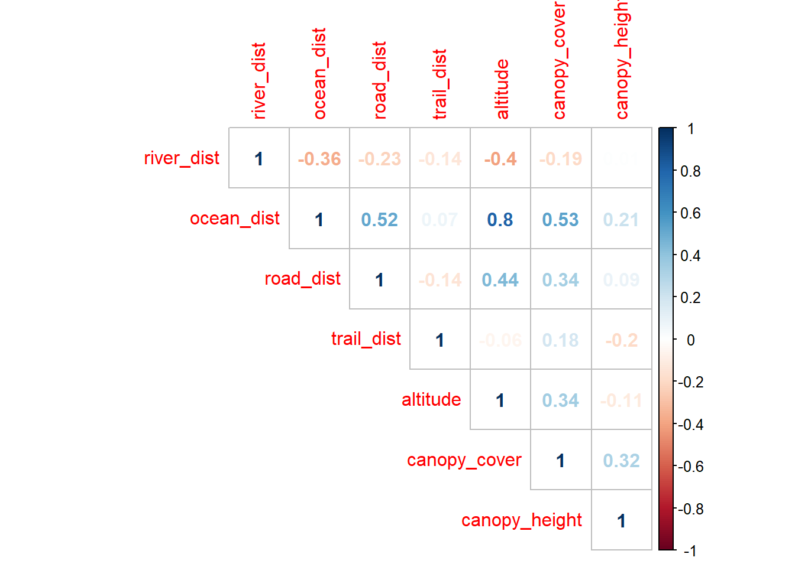
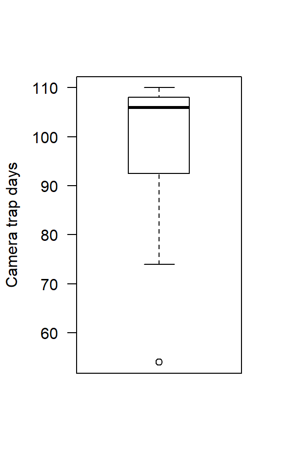

5 Real world data
We have now been through the basics of R and R studio. Today we apply it to a real world example - a camera trapping dataset collected at Osa Conservation. You will be confronted with real issues involved in preparing, exploring and analysing ecological data in R.
5.1 Data organisation
The more time I spend doing research, the more I realise that the majority of the problems we have performing data analysis can be solved with good organisation. When you are building your own data analysis data frame you should stick to my the 10 database commandments:
5.1.1 The 10 database commandments
The survey data collected with the same protocol should never be split by site/person collecting it/month of the year. Never ever split up datasets, it is a nightmare to fix. Have a column in the dataset that contains site ID/observer ID/Month instead.
One line = one statistical unit. Do not pool data independent data into one line. In ecology, one statistical unit usually means one observation (i.e. spotting a species on a transect) - if you see two different species or two groups of the same species, use two lines. If you pool this data you going to waste time and losing important information.
Never encode catagorical variables as 0 or 1. You will need a key to figure out what they mean in the future! Just use the actual levels - ie. yes/no or inside/outside (e.g. protected areas)
Your database should only include data - no empty filler cells to look nice! Some people ‘pretty up’ their spreadhseet by including spaces… No thanks!
Headers should only span one row. R can not handle more… listen to R.
Be consistent! R treats the following as different: “Man”, “man”, " man“,”man ". This is a hassle to clean up!
Include units in the column headings. There is nothing worse than characters included in a numerical column (e.g. 3 years) -> R will read it as a character string!
Don’t record coordinates in degrees, minutes, seconds. Decimal degrees are king. We are in the digital age - get out of the middle ages!
Headings should be consise, but still understandable. No-one likes to type elephant$NameOfTheElephant every time they want to plot a graph.
Never use commas when recording data!
5.1.2 My database setup
I like to have four spreadhseets for each project: “data”, “effort”, “covariates”, and “species info”. Each sheet has at least one ‘key’ column to link it to data in other columns.
Data is a database of the observations or captures of a species and the additional information you record when they are observed (e.g body size, group size etc).
Covariates is a database containing the locations of your survey points, and any additional site-level information about those sites for the analysis (altitude, proximity to roads etc.)
Effort is a database recording the sampling events. If you were doing observational transects you would record a unique id for each time you walked a transect. For camera trapping it would be each time you deployed a trap in the same location.
Species info is the sheet to link species codes in the main database to data about the species (e.g. latin names)
5.2 Osa data
We will explore the OsaGrid dataset. I’ll need your help to tell me basic summary information about this project and start the data exploration. I will (occasionally) give you some helpful hints. The idea is you apply some of the tools you learnt in the first two sessions to real world data!
The data are from a terrestrial camera trapping survey conducted in four different habitats: primary, secondary, plantation and agricultural land.
OsaCTgrid_dat # Keys = ‘Code’ and ‘Station’
OsaCTgrid_covariates # Keys = ‘Station’
OsaCTgrid_effort # Keys = ‘Station’
OsaCTgrid_speciesinfo # Keys = ‘Code’
5.3 Importing a dataframe into R from excel
The only time I ever use excel is to enter my data. After today, you will hopefully be the same! Luckily, somebody has already entered this data for you. Check out the OsaCTgrid files, three of them are in .csv format, one of them, OsaCTgrid_data, is an excel file. R doesnt like excel files. We need to convert it first.
Open the excel documents ‘OsaCTgrid_data.xls’.
In excel, select File | Save as.. from the menu and navigate to the folder where you wish the file to be saved. Enter the file name (keep it the same for simplicity) in the ‘File name:’ dialogue box. In the ‘Save as Type:’ dialogue box click on the down arrow to open the drop down menu and select ‘csv (Comma delimited)’ as your file type. Select your R Project folder, the ‘ClassData’ folder and click Ok to save the file. Your file will now be saved as OsaCTgrid_data.csv.
This file can now be read directly into R using the read.csv() function.
data <- read.csv("ClassData/OsaCTgrid_data.csv", header =T) # header = T tells R
# that the data has column titlesTASK 11
Read in the other files. call them effort, covariates and sp.info
REMEMBER TO MAKE NOTES
5.4 Effort exploration
The first thing I like to do with a dataset is figure out how many surveys were performed. This information is stored in our effort datasheet.
TASK 12
Explore the structure of the effort sheet. What can you tell me about it? How many camera traps were working when collected (‘Status’ column)? What are the other categories?
Hint: use table()
## Station date_set date_collected Status
## 1 TCT01 13/05/2017 14/08/2017 working
## 2 TCT02 26/05/2017 14/08/2017 working
## 3 TCT03 18/05/2017 18/08/2017 working
## 4 TCT04 18/05/2017 16/08/2017 working
## 5 TCT05 18/05/2017 17/08/2017 working
## 6 TCT06 2/6/2017 17/08/2017 working##
## camera broken camera setup error SD not working working
## 1 1 2 565.4.1 Dealing with dates
We need to find out how many nights each camera was running. We have a start date (date_set) and an end date (date_collected). What is the easiest way to find out the effort?
R has an amazing lubridate package to make working with dates quick and easy. Read more about it here: https://lubridate.tidyverse.org/
Install the lubridate package
The way that lubridate works is it automatically detects the format of your date, as long as you tell it the order of the days, months and years. If your date object was ‘y/m/d’ you would use the ymd() command, if it is ‘d/m/y’ you use the dmy() command.
TASK 13
Repeat the same for the date collected, call it effort$end. Use the head() function to check it worked
If it work it should look like this:
## Station date_set date_collected Status start end
## 1 TCT01 13/05/2017 14/08/2017 working 2017-05-13 2017-08-14
## 2 TCT02 26/05/2017 14/08/2017 working 2017-05-26 2017-08-14
## 3 TCT03 18/05/2017 18/08/2017 working 2017-05-18 2017-08-18
## 4 TCT04 18/05/2017 16/08/2017 working 2017-05-18 2017-08-16
## 5 TCT05 18/05/2017 17/08/2017 working 2017-05-18 2017-08-17
## 6 TCT06 2/6/2017 17/08/2017 working 2017-06-02 2017-08-17Now to calculate the number of days the camera was functioning, we use the interval() command. The interval command works as interval(start, end)/desired.unit(1)
interval(effort$start, effort$end)/days(1) # days
interval(effort$start, effort$end)/weeks(1) # weeks
interval(effort$start, effort$end)/years(1) # weeks
interval(effort$start, effort$end)/seconds(1) # seconds!Great! The result in days is the most useful. Hang on… what are we forgetting?
TASK 13 Assign the result to a new column
TASK 14 What is the mean amount of time a camera was active? What is the maximum and the minimum? Hint: use summary()
## Min. 1st Qu. Median Mean 3rd Qu. Max.
## 33.00 92.75 106.00 99.27 108.00 110.005.4.2 Remove cameras that did not function
For this analysis we only want to analyse the camera stations which worked fully.
TASK 15 Remove the cameras which were not working by until the end of the project * Hint: use the [ , ]’s with a logic statement.
Check that your subset worked. You should now have only 56 cameras, all of which have “working” in the ‘Status’ column
##
## camera broken camera setup error SD not working working
## 0 0 0 56# Whenever you remove factors it is a good idea to "reset the levels"
effort$Status <- factor(effort$Status)TASK 14 Plot a boxplot of the amount of camera effort in the remaining camera stations Hint: use boxpolot()
5.5 Covariate data
We now need to see how the study is designed. The first thing to do is to explore the structure of the covariate dataframe. First, let’s remove the cameras that did not work.
TASK 15
Subset the covariates data frame to only include camera stations in the updated effort dataframe. Hint: Use [,] with a %in% logical statment.
If your command worked, you should now only have 56 camera stations in you covariates file.
TASK 16
Explore the covariates database using str()
What can you tell me about the covariate data frame? 1) How many columns do we have? 2) What format are the gps locations in? 3) How many cameras are located on/off trails? How many different habitats do we have?
## [1] 14## [1] N08°24'36.1" N08°24'20.7" N08°25'14.7" N08°24'34.2" N08°24'37.4"
## [6] N08°24'48.4"
## 59 Levels: N08°23'47.8" N08°23'53.8" N08°24'00.2" N08°24'03.9" ... N08°25'44.5"##
## off on
## 45 11Now lets check out the habitat types
##
## agricultural matrix agricultural_matrix plantation plantation
## 1 9 10 1
## primary primary secondary secondary
## 17 3 11 4WHAT! 8 categories…! But you said that there were only 4!?!?! We have two different problems here! Agricultural matrix is spelt with and without an ’_’ and there are some blank spaces after several of the plantation, primary and secondary catagories. R sees all.
TASK 17 Enter the following code
# Dealing with the missing underscore - use logic to correct it
# Replace "agricultural matrix" with "agricultural_matrix"
covariates$habitat_type[covariates$habitat_type=="agricultural matrix"] <-
"agricultural_matrix"
# White space issues are very common,
# there is a little bit of code to deal with it trimws()!
covariates$habitat_type <- trimws(covariates$habitat_type)
# Check that it worked
table(covariates$habitat_type)##
## agricultural_matrix plantation primary secondary
## 10 11 20 155.5.1 Plotting your survey sites - Substr()
Plotting GPS coordinates in R is exactly the same as doing a normal scatter plot. However, the first thing you need to do is ensure that your data are in decimal degrees. Unfornuately ours are in degrees, minutes seconds.
The calculation to convert DMS to decimal degress is relatively simple:
Decimal Degrees = (Seconds/3600) + (Minutes/60) + Degrees.
However to extract the data from our colums we will have to master the substring command substr(). First extract the first row of the covariates$latitude column and examine its structure.
## [1] N08°24'36.1"
## 59 Levels: N08°23'47.8" N08°23'53.8" N08°24'00.2" N08°24'03.9" ... N08°25'44.5"If you count the number of latters from the first, the degree data are stored in the 2nd and 3rd characters, minutes in the 5th and 6th, and seconds data in the 8th-11th slots. substr() can extract these values substr(data, start position, end position).
# example of substring
substr(covariates$latitude[1], 2,3) # extract the second and third values (degrees)## [1] "08"TASK 18 What is the problem? The number is actually a character string as it is surrounded by "" quatation marks. Convert it to numeric
Now we just plug the vlues into the equation (remembering to convert the output to as.numeric).
Enter the following
covariates$Y = (as.numeric(substr(covariates$latitude, 8,11)) / 3600) + # seconds +
(as.numeric(substr(covariates$latitude, 5,6 )) / 60) + # minutes +
as.numeric(substr(covariates$latitude, 2,3 )) # degreesTASK 19
Do the same for the longitude data. assign it to column X
HINT: Be careful, the character positions change! And multiple by -1 as it is a “west” coordinate.
## [1] W083°19'49.5"
## 59 Levels: W083°18'41.8" W083°18'51.2" W083°18'52.1" ... W083°21.11.1Now we can do a standard scatter plot of our data…. with one difference. Whenever you map things in R you should lock the aspect ratio to 1 (asp=1) or the map will look strange!
par(mfrow=c(1,2))
plot(covariates$Y~covariates$X, pch=19,asp=1)
plot(covariates$Y~covariates$X, pch=19) 
TASK 20
Smarten up your graph! Try adding separate shapes for each different habitat
Hint: start with a blank plot (type="n"), then sequentially add the points for the different habitats using points() and the logic statement covariates$Habitat_type==
Try to make something like this:

It is relatively simple to add shape files to plots like these using the “Simple Features” package. All the clever ways to use the Simple Features would be a couse in itself. Now lets just use it to make a nice graph.
The first step is to load the package and the shapefiles
## Warning: package 'sf' was built under R version 3.6.3trails <- st_read("ClassData/Map Files/Trails.shp", stringsAsFactors = F)
roads <- st_read("ClassData/Map Files/Roads.shp", stringsAsFactors = F)
rivers <- st_read("ClassData/Map Files/Rivers.shp", stringsAsFactors = F)
country <- st_read("ClassData/Map Files/Country.shp", stringsAsFactors = F)When making maps, it is best to start the plot with the survey sites, then add the layers on top. This is the esiest way to ensure that the plot window is appropriately sized.
To plot Simple Features shapefiles you need to specify that you want to plot the geometry of the object: st_geometry. See below:

5.5.2 Explore your covariates
We have 7 covariates in this data which could explain some variation in mammal abundance detected on camera traps. We should explore them.
TASK 21
*** How are the covariates river dist, ocean_dist, road_dist, altitude, canopy_cover, and canopy_height related to one another?***
Hint: Use the corrplot package to calculate the covariance between the explanatory variables.
What do you think about the correlations? Are we worrid about anything?

5.6 Camera trap data
We will now clean and look at the camera trap data.
TASK 22 Remove the data from the cameras that did not work until the end
*** Remove the data from the cameras which did not survive until the end of the study.***
TASK 23
Have a look at the structure of the data dataframe and tell me what you see.* How many observations do we have in the camera trap dataframe? How many different species classifications do we have? Hint use nrow() to find out how many rows are in data.
A useful comman to know is as.dataframe() as it can turn a table output, into a more easily observable dataframe.
TASK 24 Run the following code
You dataframe should look like this (but longer):
## Var1 Freq
## 1 agouti 2490
## 2 Agouti 20
## 3 ants_army 1
## 4 armadillo_ninebanded 142
## 5 bike 6
## 6 bird_large_uid 1
## 7 bird_small_uid 635
## 8 broken 10
## 9 capuchin_whitefaced 17
## 10 caracara_crested 1
## 11 coati 335
## 12 Coati 0Doing this we can see that we have some issues. Agouti appears twice (“agouti” and “Agouti”), and coati appears twice as (“Coati” and “coati”). Luckily there is a nice command to deal with this tolower()!
TASK 25 Convert the errors to lowercase
# Always check you code has worked!
as.data.frame(table(data$Code))[1:10,]
length(unique(data$Code)) # 53 species classification5.6.1 Subsetting you data to only include species of interest.
As you have seen, we have 54 different species classifications, but some of those are birds, humans, even ‘bike’. This is where the sp.info dataframe comes in.
TASK 26 Explore the structure of the sp.info dataframe
## Code Mammal Native Species
## 1 agouti yes yes Dasyprocta punctata
## 2 ants_army no yes <NA>
## 3 armadillo_ninebanded yes yes Dasypus novemcinctus
## 4 bike no no <NA>
## 5 bird_large_uid no yes <NA>
## 6 bird_small_uid no yes <NA>## [1] "agouti" "bird_small_uid"
## [3] "capuchin_whitefaced" "coati"
## [5] "heron_barethroatedtiger" "nothing"
## [7] "opossum_foureyed" "opossum_uid"
## [9] "opossum_water" "paca"
## [11] "people" "raccoon"
## [13] "setup" "tamandua"
## [15] "uid" "curassow_great"
## [17] "grison" "horse"
## [19] "mammal_small_uid" "opossum_common"
## [21] "peccary_collared" "puma"
## [23] "skunk_striped" "woodrail_greynecked"
## [25] "bird_large_uid" "hawk_roadside"
## [27] "armadillo_ninebanded" "tinamou_great"
## [29] "cow" "egret_cattle"
## [31] "ocelot" "squirrel_uid"
## [33] "tapir" "caracara_crested"
## [35] "ibis_white" "vulture_black"
## [37] "lizard_uid" "jaguarundi"
## [39] "tayra" "dog"
## [41] "iguana_green" "ants_army"
## [43] "peccary_whitelipped" "tinamou_little"
## [45] "margay" "motmot_bluecrowned"
## [47] "jaguar" "guan_crested"
## [49] "forestfalcon_collared" "broken"
## [51] "scorpion_bark" "bike"
## [53] "horse_ridden"For this analysis, we want to subset the data to just mammals, which are native, and can be identified to genus level.
TASK 27
Write a line of code which allows us to subset sp.info to a new dataframe called focal.info based off the above criteria.
Hint: use [,] and multiple logic statements linked by the ‘&’ sign. Remember, to deal with NA’s you will need to do the ‘is.na()’ command.
## [1] 21If you have performed your operation correctly, your sp.focal dataset should contain 21 species.
*** Now subset the data dataframe to only contain the species in your ’focal.info database. Assign it to a new dataset - final.data ***
## Name Station Code
## 47 2017-07-02 12.55.24_00047.AVI CT02 agouti
## 48 2017-08-11 09.07.34_00048.AVI CT02 agouti
## 49 2017-08-13 09.25.20_00049.AVI CT02 agouti
## 50 2017-08-13 13.01.38_00050.AVI CT02 agouti
## 51 2017-08-14 08.57.04_00051.AVI CT02 agouti
## 53 2017-06-23 13.28.04_00053.AVI CT02 capuchin_whitefaced5.6.2 Extracting time and date information
When ever you have observatiosn you should record the times and dates. We dont currently have that information in the final.data dataframe.
In the effort sheet we extracted date information using lubridate(). We can do exactly the same thing here as the dates and times are embedded in the filenames column final.data$Name.
## [1] 2017-07-02 12.55.24_00047.AVI
## 11906 Levels: 2017-04-03 14.38.28_01513.AVI ... 2017-08-20 06.52.14_12082.AVIExamining the first element in the dataframe you can see that the first 19 characters contain the the date and time information in the format ‘Y-m-d H.M.S’.
TASK 28
*** Write a command to extract the first 19 characters from final.data$Name.
Hint: use substr()
Next, convert that object to an R date column called final.data$Date using lubridate - ymd_hms()
If you have run the code correctly the top of you dataset should now look like this:
## Name Station Code
## 47 2017-07-02 12.55.24_00047.AVI CT02 agouti
## 48 2017-08-11 09.07.34_00048.AVI CT02 agouti
## 49 2017-08-13 09.25.20_00049.AVI CT02 agouti
## 50 2017-08-13 13.01.38_00050.AVI CT02 agouti
## 51 2017-08-14 08.57.04_00051.AVI CT02 agouti
## 53 2017-06-23 13.28.04_00053.AVI CT02 capuchin_whitefaced
## Date
## 47 2017-07-02 12:55:24
## 48 2017-08-11 09:07:34
## 49 2017-08-13 09:25:20
## 50 2017-08-13 13:01:38
## 51 2017-08-14 08:57:04
## 53 2017-06-23 13:28:04We can use this information to explore animal activity patterns. To do that we need to extract the an “hour” column from the final.data$Date information. Lubridate makes this nice and easy.
TASK 29
Plot a histogram of of the times recorded in the hour category and specify hourly breaks. What can you tell me about when animals are usually captured?
Hint: use hist for the plot and seq() to determine the breaks.
TASK 30 *** Repeat this graph using the data for two species of your choice. Try a diurnal mammal and a nocturnal mammal (paca, possum_foureyed. Share your graphs with the class** Hint: subset the data using the [,] and a logic statement e.g. final.data\(Hour[final.data\)Code==“tapir”]. Remember to change the title! Edit the code below.
hist(final.data$Hour[final.data$Code=="tapir"], # Specify the data
breaks=seq(0,24,1), # Specify the breaks
main = "Tapir detection frequency", # change the title
las=1, # Rotate the y axis labels (essential!!!!)
xlab="Hour") # Label the x-axis
5.7 Building analysis dataframes
So far we have explored our four different datasheets, but now we need to build the final analysis dataframes. To do that we need to decide what we want to study, and then define what out statistical unit is.
TASK 31 Come up with some questions to ask
5.7.1 Relative abundance
we could hypothesise that the more degraded a habitat is, the fewer animals you will find there. We have four habitat types so we might think that:
Primary > Secondary > Plantation > agricultural_matrix
As we are interested in the abundance of mammals in the different habitats, I could just add up all of the detections of a given species in a habitat, and compare those between habitat types. Is there a problem with that?
Remember the camera effort boxplot from earlier:

## Min. 1st Qu. Median Mean 3rd Qu. Max.
## 54.00 92.75 106.00 99.91 108.00 110.00Some cameras were active for 110 days, th rest for less. If we were to just add up the number of captures, the cameras with half the amount of effort will have half as many captures, regardless of that habitat they are in.
Consequently, we need to standardise our counts to relative abundance of mammals: the number of detections per unit time (usually 100 camera trap days). Fortunately, this is relatively simple:
For each camera -> sum(all detections) / effort.days * 100
The steps we need to take are:
Summarise the
datafile to count every observation and store it in a new dataframeMerge the count data with the
effortfile - so we can calculate the relative abundance indexMerge the new count data file with the
covariatesfile so we can explore how our covariates influence mammal abundance.
In this case the “statistical unit” we are interested in (remember point 2 of the 9 commandments) is the camera. So we want to summarise this data so that one row = one camera station.
5.7.2 Step 1: Summarise
There are some very simple functions in the dplyr to summarise data. the summarize() function is a good one to know.
The summarize() function works by summarize(group_by(data, group 1, group 2 etc), “column name” = the action you want to perform)
We will produce the summary for each species:
library(reshape2)
final.data$Code<- factor(final.data$Code)
count.sp <- melt(table(final.data$Station, final.data$Code))
colnames(count.sp) <- c("Station", "Code", "Count")
head(count.sp)## Station Code Count
## 1 CT02 agouti 5
## 2 CT03 agouti 1
## 3 CT04 agouti 1
## 4 CT06 agouti 45
## 5 CT07 agouti 154
## 6 CT08 agouti 0If you performed this operation correctly it should look like the following:
## Station Code Count
## 1 CT02 agouti 5
## 2 CT03 agouti 1
## 3 CT04 agouti 1
## 4 CT06 agouti 45
## 5 CT07 agouti 154
## 6 CT08 agouti 05.7.3 Step 2: Merge with effort
Next we need to merge our data with the effort data.
To merge with the effort sheet we can use the Station key and the left_join() command. We dont want to use all the columns in the effort sheets as things will get messy. Lets subset it first:
# First subset the effort file to just the columns you want to merge - 'Station' and 'days'
effort[, c("Station", "days")] # literally, give me all rows,
#but just the station and days columns
# Join your reduced data frame with the count data
count.sp <- left_join(count.sp, effort[, c("Station", "days")], by="Station")## Station days
## 1 TCT01 93
## 2 TCT02 80
## 3 TCT03 92
## 4 TCT04 90
## 5 TCT05 91
## 6 TCT06 76
## 7 TCT07 75
## 8 TCT08 74
## 9 TCT09 76
## 11 CT02 108## Warning: Column `Station` joining factors with different levels, coercing to
## character vectorYour final job is to calculate the Relative Abundance Index or RAI.
For count.sp, we need to divide the counts by the number of trapping days and times it by 100 (to get the number of captures per 100 days).
5.7.4 Step 3: Merge the covariates
So we now have a dataset on relative abundance index which we want to analyse, but we dont have any information about the sites themselves. We need to add the covariate data. To use column names on all of these would take a long time, we can use numbers instead. The columns we want are: 1 = station, then 4:12 (the covariates: habitat_type:canopy height).
TASK 35
Perform the left_join but with covariate data.
## Warning: Column `Station` joining character vector and factor, coercing into
## character vectorAll being well your dataset should now look like this:
## Station Code Count days RAI habitat_type trail river_dist
## 1 CT02 agouti 5 108 4.63 agricultural_matrix off 1631
## 2 CT03 agouti 1 110 0.91 agricultural_matrix off 644
## 3 CT04 agouti 1 110 0.91 agricultural_matrix off 1148
## 4 CT06 agouti 45 85 52.94 secondary off 219
## 5 CT07 agouti 154 108 142.59 agricultural_matrix off 1589
## 6 CT08 agouti 0 106 0.00 agricultural_matrix off 1378
## ocean_dist road_dist trail_dist altitude canopy_cover canopy_height Y
## 1 252 582 104 12 70.25 10.435 8.403389
## 2 201 96 160 1 22.90 5.697 8.400056
## 3 230 133 165 6 6.44 9.953 8.401778
## 4 135 499 116 14 38.71 7.239 8.396611
## 5 787 767 46 13 15.62 9.746 8.409278
## 6 760 256 194 19 20.41 7.065 8.407500
## X
## 1 -83.35386
## 2 -83.34536
## 3 -83.34972
## 4 -83.33697
## 5 -83.35625
## 6 -83.35169We will also make a site*species matrix so we can explore relationships between multiple different species.
Save the count.sp dataset for later.
write.csv(count.sp, "SpeciesRAIdata.csv", row.names=F)
write.csv(count.mat, "SpeciesMATRIXdata.csv", row.names=F)We are now ready for some proper data exploration
5.8 Real data exploration
Team Task I have never analysed this data, I have no idea what it will tell us.
Break into groups and summarise the data in these datasets.
Questions:
- What are the most commonly detected species?
Hints:
- Scatterplots of continuous variables with RAI (plot())
- Boxplots of catagorical variables with RAI (boxplot())
- Boxplots of catagorical covariates with Habitat_type (boxplot)